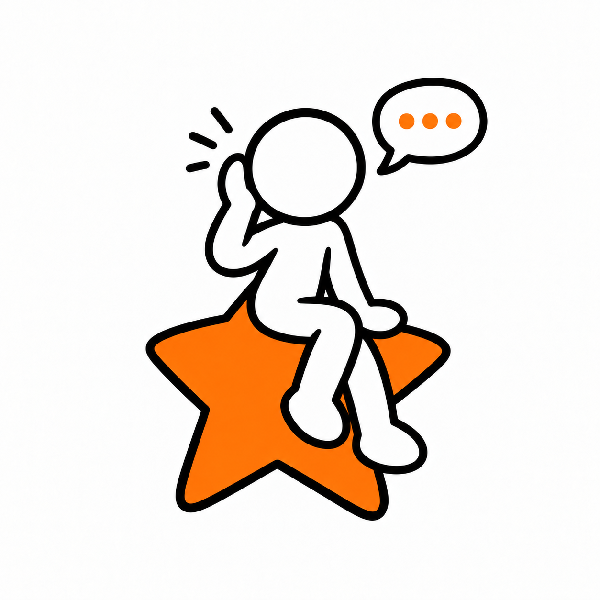

A LITTLE MORE US
A space to have your say.
Three ways to make feedback feel like
a conversation with NextStepUni.
Interactive preview · Nothing you write here is sent.
WHY THIS DIRECTION

MEET THE LISTENER
A familiar face.
A new role.
The same soft shapes and hand-drawn ink as the Star Crew. A little lean-in that says: we’re listening.
MY PICK
Direction 01. The strongest fit with the new onboarding: generous white space, confident type and a companion with a purpose. Direction 02 works well as a smaller pop-up.